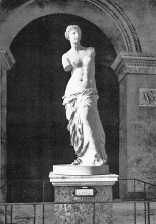

Tüm zamanların en ünlü heykellerinden biri olan Milo Venüs’ü (Venus de Milo), ismini 1820 yılında bir köylü tarafından Milos adlı Yunan adasında bulunmasından alır. Türk yetkililerin el koyduğu eser, nihayet bir Fransız donanma görevlisine satılmıştır. Eser 1821’de XVIII. Louis’ye sunulmuş ve o da eseri halen sergilemekte olan Paris’teki Louvre Müzesi’ne bağışlamıştır.
İki yüz üç santimetre boyundaki heykel, Paros adlı Yunan adasından çıkarılan mermerden yapılmıştır. Teması, Romalıların Venüs olarak bildiği Yunan Aşk ve Güzellik Tanrıçası Afrodit’tir. Heykelin yakınlarında, elinde bir elma tutan yontma bir kol bulunmuştur. Pek çok bilim insanı bu kolun esasında heykele ait olduğuna inanıyor. Efsaneye göre Truvalı Paris, Venüs’ü dünyadaki en güzel kadın seçerek ona altın bir elma vermiştir.

Heykelin ne zaman ve kimin tarafından yapıldığı pek çok tartışmaya konu olmuştur. Başlangıçta Louvre’daki yetkililer eserin muhtemelen Phidias veya Praxiteles tarafından yapılmış bir klasik dönem (MÖ V. veya IV. yüzyıl) eseri olduğunu açıkladılar. Ancak heykelin üzerinde bulunduğu kaide, heykeltıraşın Antakyalı Alexandros olduğuna işaret eder ve bu koloni daha sonraları, Helenistik dönemde kurulmuştur. Müze yetkilileri nihayet heykelin Helenistik döneme ait olduğunu kabul etmişse de eser hâlâ isimsiz bir sanatçıya ait olarak gösterilmektedir.
Milo Venüs’ü keşfedildiğinden bu yana dünya çapında büyük bir hayranlık uyandırmıştır. İngiliz oyun yazarı Oscar Wilde, heykelin alçı bir kopyasını sipariş eden ve Paris’ten gelen kopyanın kolları olmadığını görünce trenyolu şirketine dava açan bir adamın hikâyesini anlatır. Wilde’ı olaydan daha çok şaşırtansa adamın davayı kazanması olmuştur.
EK BİLGİLER:
1. Bavyera Prensi I. Ludwig, heykelin, 1817’de Milos’ta satın almış olduğu arazide bulunduğu konusunda ısrarcı olmuş ve kendisine verilmesini talep etmiştir.
2. Milo Venüs’ü 1964’te Japonya’da sergilenmiş ve bir buçuk milyondan fazla ziyaretçi, yürüyen bir platform üzerinden heykeli seyretmiştir.